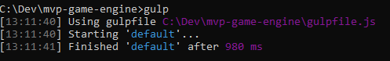
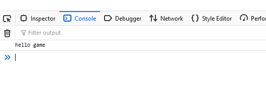

Lesson 0 - Intro
In this article we will be setting up the infrastructure to build the JavaScript file that will be served to the players, the main game loop, and the capability to draw things on the screen.
Setting up the tools
In a web browser context, all JavaScript code that needs to be executed by the end user must ultimately be served through a <script> tag.
While making our game, eventually we will have to split our code into multiple files, and it's not viable to use script tags for each of them.
This makes it necessary to have a build (or bundling) step, where all of our small JavaScript files are merged into a single file, which is then served to our players.
We'll be using Browserify and Gulp to do the code bundling.
These programs run in a Node.js context, so we'll need to install Node.js to use Browserify and Gulp.
After installing Node.js and initializing a project, we install Browserify and Gulp using the following command: npm install --save-dev gulp browserify vinyl-source-stream vinyl-buffer
Also, we'll need to install Gulp globally in our system using the following command: npm install -g gulp-cli
You may have noticed that we added vinyl-buffer and vinyl-source-stream in our installation. They are used by Browserify to manipulate files and streams.
We'll also need a web server to host the game.
Express is by far the most popular Node.js web server, so we'll install that by running the following command: npm install --save express
We'll place the game source code in the src directory. The entry point of the game will be the engine.js file, and it servers a similar role to main() function in C++, Java, and C#.
We'll create the engine.js file, place it in the src directory, and put the following code there: console.log("hello game");
Project directory structure
Our project has three primary directories: app, public, and src. We'll need to create them all.
The app directory is used to host the Node.js web server that will serve our HTML and JS files during development.
In the app directory, we'll create a file, index.js, and place the following code there:
const express = require('express');
const app = express();
const server = require('http').createServer(app);
const path = require('path');
const port = 8080;
app.use('/public', express.static(path.resolve(__dirname,'..','public')));
app.get('/', (req,res) => {
res.redirect('/public');
});
server.listen(port);
console.log('started on ' + port);
The public directory is used to host the files that will be served by the web server.
Let's create an index.html file in there, and put the following code in there:
<!doctype html> <html> <head> <title>Made using the MVP engine</title> </head> <body> <div>Hello game</div> <script src="/public/js/engine.js"></script> </body> </html>Pay particular attention to the
<script> tag, which is referencing a file in the public directory which does not exist yet.
This is the bundle file that will be generated by Gulp and Browserfiy, so we don't have to create it now.
Finally, the src directory is used to store our game engine JS files.
The entry point of the game will be the engine.js file, and it serves a similar role to main() function in C++, Java, and C#.
We'll create the engine.js file, place it in the src directory, and put the following code there:
console.log("hello game");
The files in this directory will not be served directly by the game server, but will be bundled together using Gulp and Browserify.
The resulting bundle file will be placed in the public directory, and will contain the entire game in a single file.
Running Gulp and building our game
Gulp is used to run various maintenance tasks in a project, and in our case we'll use it to bundle our game engine into a single file.
The tasks are defined in a file called gulpfile.js, so let's create it and place it in the root directory of our project.
Let's place the following code in there:
const gulp = require('gulp');
const browserify = require('browserify');
const buffer = require('vinyl-buffer');
const source = require('vinyl-source-stream');
function bundle() {
return browserify({entries:`src/engine.js`})
.bundle()
.pipe(source("engine.js"))
.pipe(buffer())
.pipe(gulp.dest(`public/js`));
}
function watch() {
return gulp.watch("src/**/*.js", gulp.series("default"));
}
gulp.task("default", bundle);
gulp.task("watch", watch);
There are two tasks in the gulpfile, default and watch.
The default task runs Browserify on the src/engine.js file, bundles any other files used by it (none at the moment), and places the resulting file in the public/js/engine.js file.
The watch task keeps track of the JS files inside the src directory, then runs the default task if it detects any changes.
It's very handy since we don't have to run Gulp every time we want to make a bundle, but the bundle will be made on any change of the code.
Let's try to make a bundle right now. To run the default task, type the following command in the terminal:
gulp
The output should look something like this:

Notice the new file in the public/js directory. This file is the bundled engine, and it was created by Gulp and Browserify.
We have everything we need to test our development pipeline. Go ahead and run the web server using the following command:
node app/index.js
Then, navigate to http://localhost:8080 using your browser, and open the development console.
If everything worked correctly, you should see this message there:
